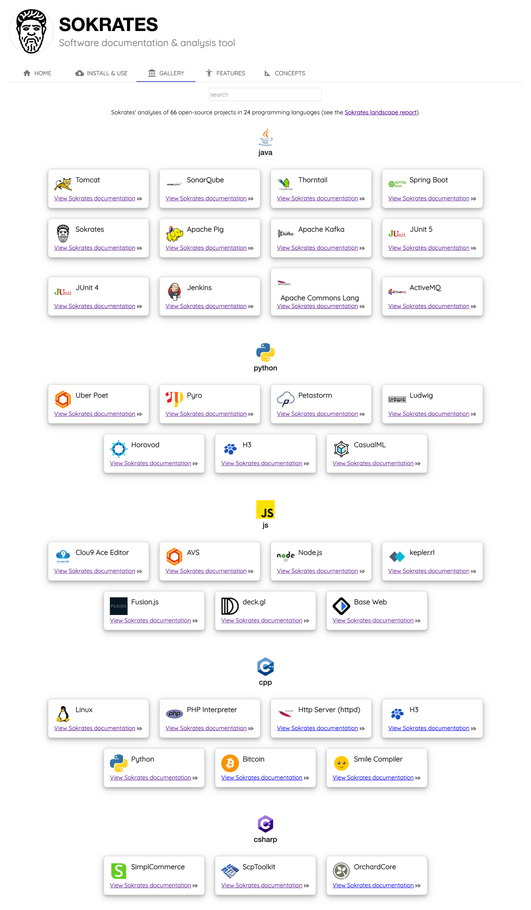

Get Your Hands Dirty
To learn how to use Sokrates, like with any software tools or programming languages, you need to do some hands-on work. Install Sokrates, and use this to analyze your code. For instance, Figure 1 illustrates how to create an initial analysis. This analysis will generate an initial configuration file under _sokrates/config.json, and reports under the _sokrates/reports/html folder. Explore these artifacts to get a basic familiarity with Sokrates projects.
git clone https://github.com/junit-team/junit5
cd junit5
java -jar sokrates-LATEST.jar extractGitHistory
java -jar sokrates-LATEST.jar init
java -jar sokrates-LATEST.jar generateReports
open _sokrates/reports/html/index.html
See a 5 minutes video on using Sokrates CLI to analyze source code of Sokrates:
See a 5 minutes video on using Sokrates Explorer to analyze source code of JUnit4:
The Sokrates website provides a gallery with the results of analyses of 66 open-source projects in 24 programming languages. Each project includes both the results of Sokrates analyses as well as a configuration file used to configure the analysis.
 Figure 1: The screenshot of the Sokrates’ gallery. The gallery is a collection of Sokrates’ projects, with the analysis of popular open-source projects.